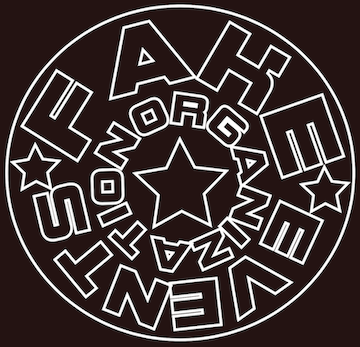
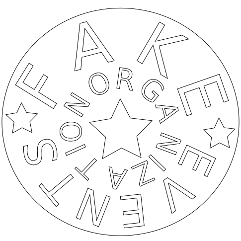

This logo was created by the creator of this webpage with the purpose of developing her design skills on the application Adobe Illustrator. The logo started out differently, the original version of the logo can be found on the bottom of the event poster and below this paragraph.
Due to technical diffculties this had to change as the properties of the logo were not transfering to the developer's computer. This resulted in the tentative logo down below.
This was not ideal as it did not have a clear feel and distinction that would take it from letters on a screen to a real logo. The next logo (seen below) was an attempt to recreate the original logo without the properties and font that were used on the original one.
This was better attempt, however through the process of recreating the logo multiple times, the developer learned more about design and Illustrator as a tool, and decided to improve this design with the new knowledge, into what is now the logo for this website.
This is the final result for the logo, it no longer has the circle surrounding the letters and it's initial shape has been modified, a few other technical tweaks were made to make the design choices look more purposeful.